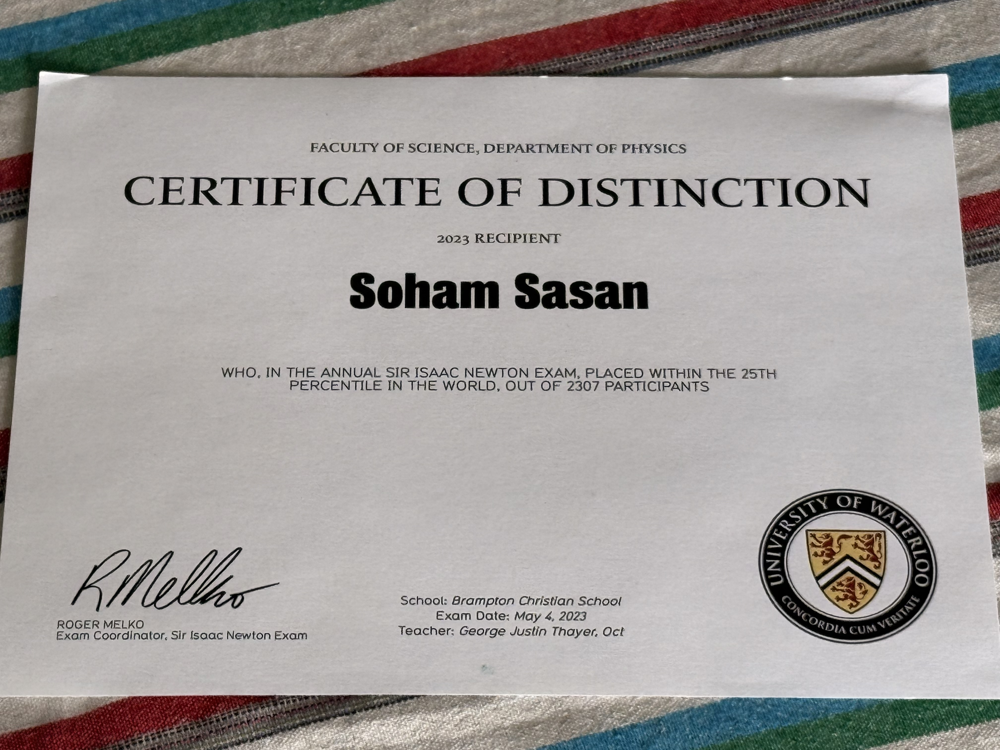
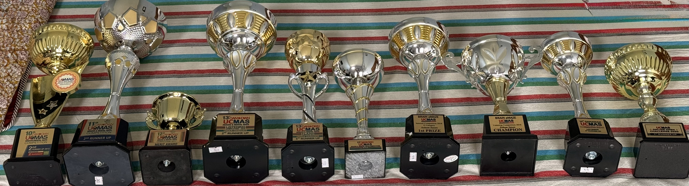

Welcome! Below, you'll find my high school projects, as well as some of my past awards/achievements.
Projects:
Western Mathematics Exposition Competition (Dec 2022-Feb 2023)
This was a competition hosted by Western University, where groups of 2-3 and a mentor spent ~4 months designing an informative poster about an important concept in Mathematics.
Alongside a teammate, and with the guidance of a mentor, I researched, designed, and developed a stunning poster showcasing the concept of Limits and their Applications in other fields of Mathematics.
Feel free to right-click on the image and view the image in another tab for a better view!
Research Paper (Feb 2023-August 2023)
Conducted via the ICASSSD (International Center for Applied Systems Science for Sustainable Development) research school, me and several other researchers were assigned a mentor to develop an innovative solution using Artificial Intelligence (AI) in healthcare.
Along with the guidance of the mentor, we ultimately decided to develop a 3-minute warning system for patients with Ventricular Tachycardia.
While it was definately a new experience (learning to analyze a research paper and how to parse through multiple papers in a limited timeframe), it was very rewarding.
You can read the full research paper here!
Awards:
UCMAS Mental Math School Competitions (2015-2020)
I have participated in centre-wide, national, and international competitions and have earned a champion trophy at the centre level, multiple 2nd runner-up titles across Canada, and a 5th runner-up award internationally. I've attached a photo showcasing all of my awards,
see bottom-right of the page.

Sir Isaac Newton Physics Contest (2023)
This was an international competition hosted by the University of Waterloo, where I had to think outside the box and solve challenging physics problems.
While the problems were tricky (some of the content was beyond what I learned at the time), through critically thinking and breaking down each problem into smaller steps, I managed to secure a certificate of distinction, which is awarded to contestants who are in the Top 25% in the world!
A picture of my certificate is to the right.

Schulich Leader Scholarship Nomination
One of the most prestigious scholarships in all of Canada, with only 100 scholarships given per year, I was nominated (on behalf of my entire school) for this prestigious award.